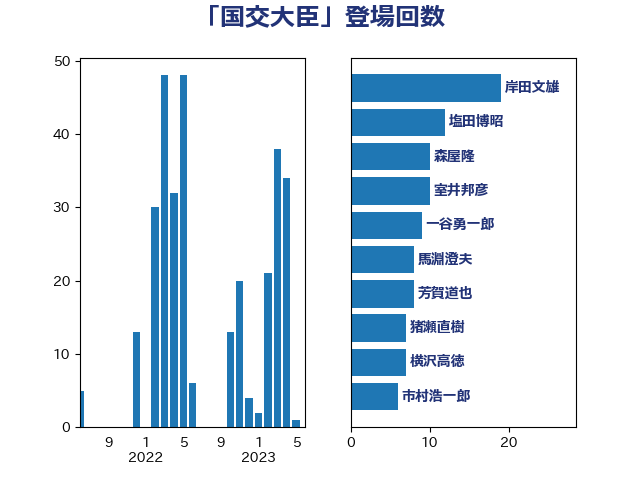

単語「国交大臣」

| 岸田文雄 | 自由民主党 | 19 回 |
| 塩田博昭 | 公明党 | 12 回 |
| 森屋隆 | 立憲民主党 | 10 回 |
| 室井邦彦 | 日本維新の会 | 10 回 |
| 一谷勇一郎 | 日本維新の会 | 9 回 |
| 馬淵澄夫 | 立憲民主党 | 8 回 |
| 芳賀道也 | 国民民主党 | 8 回 |
| 猪瀬直樹 | 日本維新の会 | 7 回 |
| 横沢高徳 | 立憲民主党 | 7 回 |
| 市村浩一郎 | 日本維新の会 | 6 回 |
| 長浜博行 | 無所属 | 5 回 |
| 谷田川元 | 立憲民主党 | 5 回 |
| 竹内真二 | 公明党 | 5 回 |
| 大口善徳 | 公明党 | 5 回 |
| 足立康史 | 日本維新の会 | 4 回 |
| 礒崎哲史 | 国民民主党 | 4 回 |
| 木村英子 | れいわ新選組 | 4 回 |
| 城井崇 | 立憲民主党 | 4 回 |
| 伊藤渉 | 公明党 | 4 回 |
| 三上えり | 立憲民主党 | 4 回 |
| 高橋光男 | 公明党 | 3 回 |
| 鈴木宗男 | 日本維新の会 | 3 回 |
| 道下大樹 | 立憲民主党 | 3 回 |
| 赤羽一嘉 | 公明党 | 3 回 |
| 萩生田光一 | 自由民主党 | 3 回 |
| 矢倉克夫 | 公明党 | 3 回 |
| 田村智子 | 日本共産党 | 3 回 |
| 漆間譲司 | 日本維新の会 | 3 回 |
| 山本順三 | 自由民主党 | 3 回 |
| 小山展弘 | 立憲民主党 | 3 回 |
| 高橋千鶴子 | 日本共産党 | 2 回 |
| 近藤和也 | 立憲民主党 | 2 回 |
| 谷合正明 | 公明党 | 2 回 |
| 西銘恒三郎 | 自由民主党 | 2 回 |
| 秋本真利 | 自由民主党 | 2 回 |
| 福田昭夫 | 立憲民主党 | 2 回 |
| 福山哲郎 | 立憲民主党 | 2 回 |
| 田村まみ | 国民民主党 | 2 回 |
| 牧義夫 | 立憲民主党 | 2 回 |
| 浜口誠 | 国民民主党 | 2 回 |
| 浅川義治 | 日本維新の会 | 2 回 |
| 新妻秀規 | 公明党 | 2 回 |
| 庄子賢一 | 公明党 | 2 回 |
| 平林晃 | 公明党 | 2 回 |
| 川崎ひでと | 自由民主党 | 2 回 |
| 山添拓 | 日本共産党 | 2 回 |
| 山本有二 | 自由民主党 | 2 回 |
| 山崎誠 | 立憲民主党 | 2 回 |
| 小宮山泰子 | 立憲民主党 | 2 回 |
| 大串博志 | 立憲民主党 | 2 回 |
| 和田政宗 | 自由民主党 | 2 回 |
| 吉川沙織 | 立憲民主党 | 2 回 |
| 古賀之士 | 立憲民主党 | 2 回 |
| 古川元久 | 国民民主党 | 2 回 |
| 佐藤正久 | 自由民主党 | 2 回 |
| 上野賢一郎 | 自由民主党 | 2 回 |
| 上月良祐 | 自由民主党 | 2 回 |
| 馬場雄基 | 立憲民主党 | 1 回 |
| 馬場伸幸 | 日本維新の会 | 1 回 |
| 青木愛 | 立憲民主党 | 1 回 |
| 階猛 | 立憲民主党 | 1 回 |
| 鈴木俊一 | 自由民主党 | 1 回 |
| 野田国義 | 立憲民主党 | 1 回 |
| 重徳和彦 | 立憲民主党 | 1 回 |
| 里見隆治 | 公明党 | 1 回 |
| 足立敏之 | 自由民主党 | 1 回 |
| 西岡秀子 | 国民民主党 | 1 回 |
| 笠井亮 | 日本共産党 | 1 回 |
| 窪田哲也 | 公明党 | 1 回 |
| 秋野公造 | 公明党 | 1 回 |
| 石川大我 | 立憲民主党 | 1 回 |
| 石垣のりこ | 立憲民主党 | 1 回 |
| 石井章 | 日本維新の会 | 1 回 |
| 田嶋要 | 立憲民主党 | 1 回 |
| 田中健 | 国民民主党 | 1 回 |
| 玉木雄一郎 | 国民民主党 | 1 回 |
| 牧野たかお | 自由民主党 | 1 回 |
| 源馬謙太郎 | 立憲民主党 | 1 回 |
| 清水貴之 | 日本維新の会 | 1 回 |
| 浜野喜史 | 国民民主党 | 1 回 |
| 泉健太 | 立憲民主党 | 1 回 |
| 池畑浩太朗 | 日本維新の会 | 1 回 |
| 櫛渕万里 | れいわ新選組 | 1 回 |
| 横山信一 | 公明党 | 1 回 |
| 森本真治 | 立憲民主党 | 1 回 |
| 森屋宏 | 自由民主党 | 1 回 |
| 根本匠 | 自由民主党 | 1 回 |
| 杉本和巳 | 日本維新の会 | 1 回 |
| 朝日健太郎 | 自由民主党 | 1 回 |
| 斉藤鉄夫 | 公明党 | 1 回 |
| 川田龍平 | 立憲民主党 | 1 回 |
| 岡田直樹 | 自由民主党 | 1 回 |
| 小熊慎司 | 立憲民主党 | 1 回 |
| 小沼巧 | 立憲民主党 | 1 回 |
| 小沢雅仁 | 立憲民主党 | 1 回 |
| 小川淳也 | 立憲民主党 | 1 回 |
| 宮本岳志 | 日本共産党 | 1 回 |
| 安江伸夫 | 公明党 | 1 回 |
| 大石あきこ | れいわ新選組 | 1 回 |
| 大島九州男 | れいわ新選組 | 1 回 |
| 大家敏志 | 自由民主党 | 1 回 |
| 塩川鉄也 | 日本共産党 | 1 回 |
| 嘉田由紀子 | 無所属 | 1 回 |
| 北神圭朗 | 無所属 | 1 回 |
| 勝部賢志 | 立憲民主党 | 1 回 |
| 佐々木さやか | 公明党 | 1 回 |
| 伊藤岳 | 日本共産党 | 1 回 |
| 伊藤孝江 | 公明党 | 1 回 |
| 伊藤孝恵 | 国民民主党 | 1 回 |
| 伊藤俊輔 | 立憲民主党 | 1 回 |
| 伊波洋一 | 無所属 | 1 回 |
| 仁比聡平 | 日本共産党 | 1 回 |
| たがや亮 | れいわ新選組 | 1 回 |